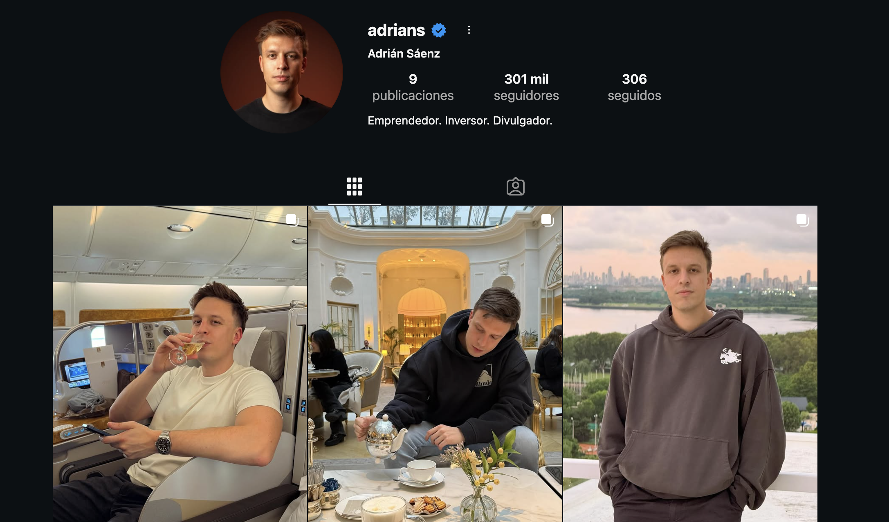

Construye tu primer sistema con criterio propio
Tienes el mapa mental y las herramientas. Ahora los usas. De la instalación de Skill Creator a tu primera skill funcionando — paso a paso, sin atajos.
- Por qué las skills viven en Claude Code y no en el chat convencional
- Cómo descargar e instalar Skill Creator — comandos exactos
- El framework de 3 preguntas para describir bien cualquier skill antes de crearla
- Cómo verificar qué skills tienes activas y cuál se está usando
- Lo que puedes construir cuando describes bien lo que quieres (y lo que viene en 2.5)
Del mapa a la herramienta
En el 2.1 desmontaste la parálisis. En el 2.2 aprendiste a pensar en sistemas. En el 2.3 viste qué herramientas existen y cuánto cuestan. Ahora usas todo eso.
Pero antes de instalar nada, hay una pregunta que tiene que quedar clara: ¿por qué usamos Claude Code para construir skills y no el chat convencional de Claude?
La diferencia es simple: las skills son sistemas — archivos que Claude Code lee y ejecuta. El chat convencional no tiene acceso a esa capa. Por eso todo lo que hacemos en este recurso ocurre dentro de Claude Code.
Descarga e instala Skill Creator
Skill Creator apareció en el 2.3 como el punto de partida para construir tus propias skills. Aquí es donde lo instalas y lo tienes listo para usarlo.
$cp -r anthropic-skills/skills/skill-creator ~/.claude/skills/skill-creator
# Local — solo en este proyecto
$cp -r anthropic-skills/skills/skill-creator .claude/skills/skill-creator
skill-creator en la lista, estás listo.Si construyes skills que quieres reutilizar en varios proyectos, global. Si la skill es específica de un proyecto concreto, local. En caso de duda, empieza con global — siempre puedes moverla después.
Describe tu skill antes de crearla
El error más común al usar Skill Creator no está en la instalación ni en los comandos. Está en ir directo a crear sin haber pensado primero qué quieres crear exactamente.
Skill Creator te hará preguntas. Si no has pensado las respuestas antes, la skill que saldrá será genérica. Si sí las has pensado, será tuya.
"Crea una skill para gestionar mi Instagram"
"Quiero una skill que, dado un @handle de Instagram, acceda al perfil, descargue foto, bio y stats, y genere un archivo HTML de web de marca personal con secciones hero, galería y contacto."
La diferencia no es la longitud — es la precisión. El prompt vago obliga a Skill Creator a interpretar. El prompt con criterio deja poco espacio para ambigüedad.
Una skill bien construida hace una sola cosa. Si necesitas dos cosas, construye dos skills. Las skills que intentan abarcar demasiado fallan con más frecuencia y son más difíciles de mejorar.
Con tus 3 respuestas listas, abre Claude Code y ejecuta:
Skill Creator te guiará con preguntas — las mismas que acabas de responder, con más detalle. Al terminar genera la carpeta de tu nueva skill dentro de .claude/skills/, con el SKILL.md que Claude Code leerá automáticamente desde ese momento.
Usa la skill que construiste
Una vez generada, tu skill se activa como cualquier otra. Escribe su nombre con la barra al inicio dentro de Claude Code:
Si tienes varias skills activas en el mismo proyecto, puedes verificar cuál se está usando con los mismos comandos de verificación del paso de instalación:
Vuelve a las 3 preguntas, no al código. En la mayoría de los casos el problema está en la definición — la skill hace lo que le dijiste que hiciera. Si el resultado no es el que querías, el trigger, la acción o el resultado no estaban bien definidos. Vuelve al paso 03 y afina.
Para que tengas una referencia concreta de hasta dónde llega una skill bien descrita, aquí hay un ejemplo real.
Una skill que convierte cualquier @handle de Instagram en una web de marca personal profesional. Accede al perfil, descarga foto, bio, stats y fotos recientes — y genera un archivo HTML completo con hero, galería y sección de contacto.


No hay código escrito a mano. Solo una skill bien descrita que sabe exactamente qué disparador espera, qué tiene que hacer y qué tiene que entregar. Eso es construir con criterio propio.
De una skill a un kit
Una skill resuelve un problema. Un kit resuelve un workflow completo.
Cuando tienes varias skills trabajando juntas — cada una haciendo una cosa bien — empiezas a tener un sistema real. No una colección de herramientas sueltas. Un sistema con criterio, diseñado para cómo tú trabajas.
Tienes Skill Creator instalado. Tienes el framework para describir cualquier skill. Tienes la primera versión funcionando. El siguiente paso no es optimizarla — es entender cómo encaja en un sistema más grande.
- Tengo claro por qué las skills se instalan en Claude Code y no en el chat convencional
- He instalado Skill Creator y Claude lo reconoce — lo verifiqué con uno de los tres comandos
- He respondido las 3 preguntas (trigger, acción, resultado) antes de abrir Skill Creator
- Tengo una primera versión de mi skill funcionando — aunque no sea perfecta
- Sé que si algo falla, el problema está en la definición — no en el código